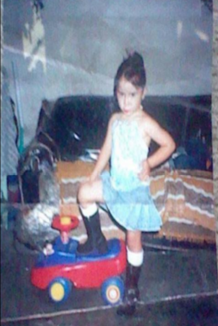

About Us
There are many pros and cons when it comes to immigration. On this site, we're going to use our experiences as 1st generation immigrants to help teens face a variety of challenges. These might include language barriers, education issues, discrimination, bullying, and battles with self-esteem and depression. Using Karla's story, we will introduce you to the hardships faced entering a new country, but also, the innovative solutions our website will be offering.
Karla's Story
Many Young people come into the united states with big dreams so they could help their loved ones. I was one of the people who’s life changed dramatically. I was born on December 8,2001 in Mexico City, full of life and dreams that one day I will come to the United States and have a bright future. I was only 5, I had nothing to worry about. On the other hand, My mom had to worry about everything, how were gonna get there, all the dangers. My mother was a short,white,brown eyed,mess. She wasn’t prepared for the things we went through but she knew she had to make it work to keep my baby brother,older brother and I safe.Crossing the border is not easy and its dafiently not something anyone can do.You have to pay thousands of dollars per person or even million of dollars. Which means, My family payed for my future. yes, I know it sounds crazy but its something that blessed me because it shaped into the person I am today.
Purpose of Site
This story will show you that everything is possible, even at a young age.
| # | Date | Event | Website Purpose/Goal |
|---|---|---|---|
| 1 | 12/8/2001 | Born | The story/purpose |
| 2 | 12/6/2006 | Emigrated | Immigration Issues |
| 3 | 2007-2008 | First Year of School | Language Barriers |
| 4 | 2008-2018 | Growing Up/Social Life | Discrimination |
| 5 | 2008-2018 | Schooling | Bullying |
| 6 | 2019 | Expected Start Date for College | Scholarships/Demographics |